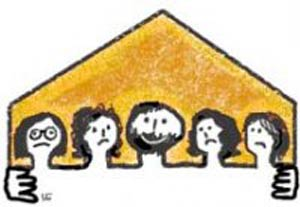
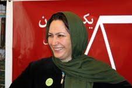

جنبش حقوق زنان در ایران بیش از صدسال پیش آغاز شد. اولین صداها برای حقوق زنان در دهه اول 1900 طی دوران انقلاب مشروطه شنیده شد. زمانی که در کشاکش انقلاب زنان درگیر مشارکت های سیاسی زیرزمینی برای حمایت از حقوق زنان با هدف تقسیم فضای اجتماعی بودند...
پذيرش > واژه كليدها > صفحه بندی > ستون وسط
ستون وسط
مقالهها
-
جستجوی زنان ایرانی برای برابری: تاریخچه، راهبردها و مطالبات
11 ژوئن 2010 -
در باب تاثیر جنبش زنان بر جنبش سبز؛ یا تاکید بر کمپین یک میلیون امضاء/نیلوفر انسان
20 ژوئيه 2010در واقع جنش زنان از آن تجمع خیابانی خود در 22 خرداد 84 که به مسالمت آمیز ترین شکل ممکن برگزار شد و پس از مدتها با گذشتن از دیگری بزرگ، خیابان این عرصه عمومی را از آن خود کرد و مصرانه خواهان تغییر در قانون بود تا کمپین یک میلیون امضاء و معنا بخشی دوباره آن به فضاهای شهری و البته حرکتهای دیگر در زمینه های دیگر جنبش زنان ، خواسته و نا خواسته معناهای تازه ای را برای مبارزات مدنی خلق کردند...
-
 کمپین یک میلیون امضا و شرایط جدید/ جمع بندی نظرات ارسال شده برای سایت تغییر برای برابری
کمپین یک میلیون امضا و شرایط جدید/ جمع بندی نظرات ارسال شده برای سایت تغییر برای برابری
29 دسامبر 2009, بوسيلهى pariچندی پیش در راستای نقش برابری خواهی در پیوند با دفاع از آزادی های شهروندی و عدالت اجتماعی در مبارزات جاری و نیز نقش تحولات اخیر بر کمپین یک ملیون امضا سوالاتی در سایت تغییر برای برابری مطرح شد و برخی از روشنفکران داخلی و خارجی و نیز فعالان اجتماعی به این سوالات پاسخ گفتند. مجموعه حاضر گزارشی است از جمع بندی پاسخ های مطرح شده../ دلارام علی ، نازلی فرخی
-
 کمپین در بطن جنبش دموکراسی خواهی ضد خشونت جاری است؛ خدیجه مقدم
کمپین در بطن جنبش دموکراسی خواهی ضد خشونت جاری است؛ خدیجه مقدم
1 نوامبر 2009, بوسيلهى pariدر جنبش ضدخشونت دمکراسی خواهی ضمن دفاع از حقوق شهروندی- حق آزادی تجمع و حق آزادی بیان- برابری خواهی به صورتی برجسته همواره مطرح بوده است. به عقیده من برابری خواهی بعد از سه سال فعالیت کمپین در جسم و روح تک تک ما رسوخ کرده و هر کس با ابتکار عمل خود با توجه به شرایط می تواند آنرا با جنبش مردمی پیوند بزند و فرمول خاصی هم نمی توان برای آن نوشت .
-
مانیفست زنان برای برابری و شهروندی زنان تونس
24 آوريل 2011, بوسيلهى pariگروه های فمینیستی در تونس، با انتشار مانیفستی خواسته هایشان را اعلام کردند. آنها ضمن ابراز خوشحالی از سرنگونی دیکتاتوری و افتخار به میراث مشترک اصلاح طلبانه در تونس، بر ادامه ی مبارزه برای بهبود شرایط زندگی شخصی و عمومی زنان تاکید کرده اند ...
-

زنان بحرینی احتیاجی به پذیرش چندهمسری ندارند
18 آوريل 2011مردان مسلمان در بحرین همانند دیگر کشورهای حوزه خلیج فارس اجازه دارند تا چندهمسر داشته باشند. قانون شریعت به مردان اجازه می دهد تا حداکثر چهار همسر داشته باشند، هرچند شیعیان اجازه دارند تا از طریق ازدواج موقت یا متعه، تعداد زنان بیشتری داشته باشند.ولی این طور نیست که چندهمسری بین زنان اینجا هم رایج و یا کاملا پذیرفته شده باشد...
-
برگزاری مراسم هشت مارس در رشت
10 مارس 2013امسال نیز همچون سالهای گذشته مراسم گرامی داشت روز جهانی زن در شهر رشت برگزار شد. در این مراسم که در تاریخ 18 اسفند- 8 مارس برگزار شد پس از قرائت تاریخچه ی 8 مارس، گزارشی از فعالیتهای گروه زنان روشنک در یک سال گذشته ارائه شد. قرائت بیانیه ی فعالین جنبش زنان به مناسبت 8 مارس بخش دیگری از این مراسم بود. و پس از آن سخنرانی ای با عنوان نقد فمینیستی بازنمایی زن در تصاویر ، ارائه شد...
-
 2500 زن در نشستی جهانی / گزارش دوم از ایوید 2012
2500 زن در نشستی جهانی / گزارش دوم از ایوید 2012
1 مه 2012زنان از چهارگوشه دنیا، از کوهپایه های مکزیک و اوگاندا تا تبت و کلان شهرهای هند، آلمان، ژاپن و آمریکا، تاجیکستان و افغانستان...چهار روز در یک مجتمع بزرگ کنفرانس در دهها سمینار و گروههای کاری بدون تنش و یا حذف یکدیگر، بحث و گفتگو کردند. روز پایانی کنفرانس شرکت کنندگان رضایت خود را از اداره ی کنفرانس ابراز کردند...
-

قانون حمایت کننده می تواند منجر به کاهش خشونت علیه زنان شود
25 نوامبر 2009معمولا متاسفانه حتی ما هم بیشتر به خشونت های جسمی و یا خشونت هایی که به جان انسانها مربوط می وشد توجه میکنیم. اما خشونت های دیگری هم در قوانین وجود دارد. مثل حق تحصیل، حق خروج از کشور، حق طلاق و ....
-
تقی رحمانی: نه بايد در جنبش سبز محو شد و نه در مقابل آن ايستاد، بايد در عين حفظ استقلال با آن تعامل كرد
9 سپتامبر 2009, بوسيلهى pariفضاي انتخاباتي و بعد از آن، نتيجه رفتار و فعاليت جريانها و افراديست كه بعد از بن بست اصلاحات كلان نگر، دولت محور پارلماني به سوي مطالبات معين روي آوردند و جنبشها يا حركات خاص يا خرد مدني را حول محور مطالبات جنسيتي (مانند كمپين يك ميليون امضاء)، قومي، مذهبي، صنفي سامان دادند و در چهار ساله دولت نهم تا حد توان فعاليت كردند و دچار محدوديت، محروميت، زندان و غيره شدند.
0 | ... | 360 | 370 | 380 | 390 | 400 | 410 | 420 | 430 | 440 | 450